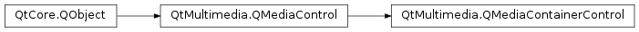

QMediaContainerControl¶
Detailed Description¶
The
PySide2.QtMultimedia.QMediaContainerControlclass provides access to the output container format of aPySide2.QtMultimedia.QMediaServiceIf a
PySide2.QtMultimedia.QMediaServicesupports writing encoded data it will implementPySide2.QtMultimedia.QMediaContainerControl. This control provides information about the output containers supported by a media service and allows one to be selected as the current output containers.The functionality provided by this control is exposed to application code through the
PySide2.QtMultimedia.QMediaRecorderclass.The interface name of
PySide2.QtMultimedia.QMediaContainerControlisorg.qt-project.qt.mediacontainercontrol/5.0as defined inQMediaContainerControl_iid().
-
class
PySide2.QtMultimedia.QMediaContainerControl([parent=nullptr])¶ Parameters: parent – PySide2.QtCore.QObjectConstructs a new media container control with the given
parent.
-
PySide2.QtMultimedia.QMediaContainerControl.containerDescription(formatMimeType)¶ Parameters: formatMimeType – unicode Return type: unicode Returns a description of the container
formatMimeType.
-
PySide2.QtMultimedia.QMediaContainerControl.containerFormat()¶ Return type: unicode Returns the selected container format.
-
PySide2.QtMultimedia.QMediaContainerControl.setContainerFormat(format)¶ Parameters: format – unicode Sets the current container
format.
-
PySide2.QtMultimedia.QMediaContainerControl.supportedContainers()¶ Return type: list of strings Returns a list of MIME types of supported container formats.
© 2018 The Qt Company Ltd. Documentation contributions included herein are the copyrights of their respective owners. The documentation provided herein is licensed under the terms of the GNU Free Documentation License version 1.3 as published by the Free Software Foundation. Qt and respective logos are trademarks of The Qt Company Ltd. in Finland and/or other countries worldwide. All other trademarks are property of their respective owners.